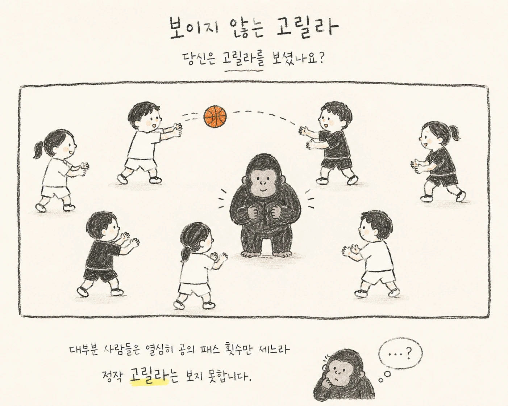
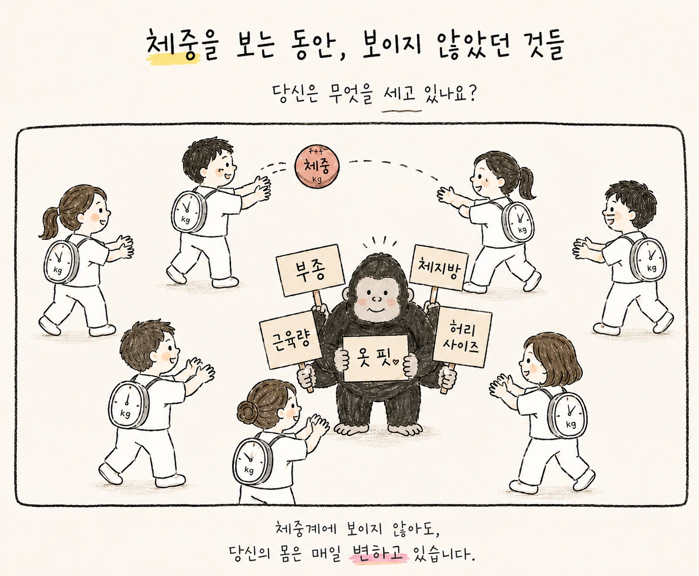

1999년 심리학자 Daniel Simons와 Christopher Chabris는 인간의 주의가 얼마나 선택적인지를 보여주는 흥미로운 실험을 발표했습니다.
영상 속 사람들은 흰옷과 검은옷을 입고 농구공을 주고받습니다. 참가자에게 주어진 과제는 흰옷을 입은 사람들의 패스 횟수를 세는 것이었습니다. 그 사이 고릴라 복장을 한 사람이 화면 중앙을 가로질러 걸어와 잠시 멈춰 가슴을 두드리고 사라집니다.
그런데 패스 횟수를 세는 데 몰두했던 참가자 중 상당수는 고릴라의 존재를 알아차리지 못했습니다.
이를 인지심리학에서는 부주의 맹시(inattentional blindness)라고 부릅니다.
중요한 것은 사람들이 고릴라를 ‘보지 않았다’는 사실보다, 자신이라면 그런 것을 당연히 알아차렸을 것이라고 생각한다는 점입니다.
우리의 시야에 들어온 모든 정보가 의식에 도달하는 것은 아닙니다. 주의는 무엇을 더 자세히 볼 것인지를 결정하는 동시에, 무엇을 배경으로 밀어낼 것인지도 결정합니다.

패스 횟수에 주의를 집중할수록, 화면 중앙의 예상하지 못한 대상도 알아차리지 못할 수 있습니다.
다이어트 진료실에서도 이와 비슷한 장면이 자주 벌어집니다.
체중이라는 아주 강력한 주의의 대상
“이번 주에는 몇 kg 빠졌어요?”
다이어트에서 이 질문을 빼놓을 수는 없습니다. 체중 감량을 위해 치료받는 환자에게 체중은 분명 중요한 치료 지표입니다.
그러나 체중계에 표시되는 숫자는 우리가 흔히 생각하는 것보다 훨씬 복합적인 값입니다.
체중은 체지방량만을 측정하지 않습니다.
지방조직과 골격근뿐 아니라 체수분, 글리코겐, 위장관 내용물까지 모두 더해진 순간의 총질량입니다. 전날 섭취한 탄수화물과 염분, 배변 여부, 운동으로 인한 글리코겐 소모, 여성의 경우 월경 주기에 따른 체액 변화에 의해서도 숫자는 달라집니다.
특히 글리코겐은 수분과 함께 저장되기 때문에 식사량이나 탄수화물 섭취가 달라진 직후 나타나는 빠른 체중 변화의 일부는 체지방의 증감과 다른 현상일 수 있습니다.
반대로 체지방은 감소하고 있는데 체중이 기대만큼 움직이지 않는 시기도 있습니다.

체중 외에도 부종, 체지방, 근육량, 허리 사이즈와 옷 핏은 서로 다른 변화를 보여줄 수 있습니다.
진료실에서 체중의 정체를 마주하면 확인할 것이 하나가 아닙니다.
정말 지방이 줄지 않고 있는 것인지, 아니면 체중이라는 측정값이 지금 그 변화를 충분히 보여주지 못하고 있는 것인지.
이 둘은 전혀 다른 문제이기 때문입니다.
살이 빠진다는 것은 하나의 현상이 아닙니다
의학적으로 체중 감량은 섭취와 소비의 에너지 관계에서 벗어날 수 없습니다. 지속적인 에너지 부족이 형성되어야 저장된 에너지가 사용됩니다.
하지만 실제 사람의 몸에서 그 과정은 계산식처럼 매일 일정하게 나타나지 않습니다.
체중이 감소하면 기초적인 에너지 소비량과 활동에 필요한 에너지량도 달라질 수 있고, 장기간의 에너지 제한에서는 식욕과 포만에 관여하는 여러 생리적 조절 과정 역시 변화합니다. 어떤 사람은 체중이 내려갈수록 이전보다 강한 허기를 경험하고, 자신도 모르게 일상적인 움직임이 줄어들기도 합니다.
같은 식단을 계속하는데 처음보다 체중이 천천히 내려가는 경험이 드물지 않은 이유입니다.
그렇다면 경과를 평가할 때 물어야 할 것은 얼마나 적게 먹을 수 있는가보다 그 섭취량을 몸이 어떤 상태로 견디고 있는가입니다.
오후가 되면 견디기 어려울 정도로 허기가 오는지, 식사를 시작하면 멈추기 어려운지, 잠드는 시간이 늦어지고 있지는 않은지, 변비가 심해졌는지, 이전보다 추위를 심하게 느끼거나 쉽게 피로해지는지, 운동할 때 수행능력이 현저하게 떨어지고 있지는 않은지를 묻습니다.
이런 문진은 체중 감량과 별개의 이야기가 아닙니다.
오히려 지금의 감량 방식이 앞으로도 지속될 수 있는지를 판단하기 위한 임상 정보에 가깝습니다.
체중이 잘 빠지고 있다는 말도 때로는 다시 물어야 합니다
반대편의 고릴라도 있습니다.
체중이 빠르게 줄어들면 우리는 그 숫자를 좋은 결과라고 해석하기 쉽습니다.
하지만 감량 과정에서 우리가 원하는 것은 가능한 한 체지방을 줄이면서 제지방의 과도한 손실을 피하는 것입니다. 지나치게 큰 열량 제한, 부족한 단백질 섭취, 저항운동의 부재가 겹친다면 체중 감소의 일부가 원하지 않았던 제지방 감소에서 올 수도 있습니다.
체중계는 그것을 구별해주지 않습니다.
1kg이 줄었다는 사실만 알려줄 뿐, 어떤 1kg을 잃었는지까지 말해주지는 않습니다.
체중이 순조롭게 내려가는 분께 오히려 질문이 늘어나는 때가 있는 것도 이 때문입니다.
체중은 줄었는데 유난히 기운이 없는 것은 아닌지, 운동할 때 사용할 수 있는 힘이 계속 떨어지는 것은 아닌지, 식사를 지나치게 두려워하게 된 것은 아닌지, 밤마다 허기를 참느라 잠들지 못하고 있지는 않은지.
다이어트에서 숫자가 내려가는 것과 좋은 방향으로 몸이 변해가는 것은 상당 부분 겹치지만, 언제나 완전히 같은 의미는 아닙니다.
측정하는 것이 목표가 되는 순간
의료에는 측정할 수 있는 값들이 많습니다.
혈압, 혈당, 체온, 심박수, 체중, 체지방률.
측정값이 있다는 것은 매우 유용합니다. 막연했던 몸의 상태를 비교할 수 있게 하고, 치료 전후의 변화를 판단할 근거를 만들어주기 때문입니다.
하지만 숫자가 정확하다는 사실과 그 숫자가 몸 전체를 설명한다는 것은 다른 이야기입니다.
혈압 하나만으로 심혈관계 전체를 설명할 수 없고, 혈당 한 번으로 대사 상태 전체를 판단할 수 없듯 체중 하나 역시 감량 과정 전체를 대신할 수 없습니다.
그런데 다이어트에서는 유독 체중이라는 숫자가 목표와 평가의 자리를 동시에 차지하기 쉽습니다.
‘살을 빼고 싶다’는 목표가 어느 순간부터 ‘내일 아침 체중계에서 더 작은 숫자를 보고 싶다’는 목표로 바뀌는 것입니다.
두 문장은 닮아 있지만 같은 뜻은 아닙니다.
후자를 목표로 삼으면 우리는 하루짜리 숫자를 낮추는 방법에 민감해집니다. 덜 먹고, 수분을 줄이고, 한 끼를 건너뛰는 행동도 다음 날 체중계에서는 보상을 받을 수 있습니다.
그러나 진료실에서 겨냥하는 변화의 시간 단위는 하루가 아닙니다.
오늘 아침의 300g보다 몇 주 뒤의 체지방이 중요하고, 몇 주 뒤의 체중보다 그 체중을 유지할 수 있는 몇 달 뒤의 몸이 더 중요합니다.
숫자 뒤에 있는 사람
보이지 않는 고릴라 실험은 ‘집중하지 말라’고 말하는 실험이 아닙니다.
오히려 무엇인가를 정확히 보려고 노력할수록 다른 무언가를 놓칠 가능성이 있다는 인간 인지의 역설을 보여줍니다.
진료에 필요한 경계도 이와 닮았습니다.
체중을 보되 체중만 보지 않는 것.
체지방률을 보되 그 숫자만으로 몸을 규정하지 않는 것.
식욕을 억제하는 것만 생각하지 않고, 왜 특정 시간에 허기가 커지는지 묻는 것.
환자가 “이번 주에는 하나도 안 빠졌어요”라고 말할 때 숫자부터 판단하기 전에, 그 한 주 동안 그 사람의 몸에서 무엇이 달라졌는지를 다시 듣는 것.
의학에서 측정은 중요합니다.
하지만 측정할 수 있는 것과, 관찰해야 하는 것은 언제나 정확히 일치하지 않습니다.
어쩌면 좋은 다이어트 진료란 체중계의 숫자를 더 열심히 바라보는 일이 아니라, 그 숫자가 너무 선명해서 우리가 미처 보지 못하고 있던 것들을 함께 발견하는 일인지도 모르겠습니다.

 02SHAPE · 체중·리듬다이어트 한약 중단 후 식욕과 요요다이어트 한약 중단 이후를 준비하는 치료 과정. 입맛 변화와 소화·흡수·대사의 차이, 복용 종료 기준을 디어한의원이 설명합니다.칼럼 읽기 →
02SHAPE · 체중·리듬다이어트 한약 중단 후 식욕과 요요다이어트 한약 중단 이후를 준비하는 치료 과정. 입맛 변화와 소화·흡수·대사의 차이, 복용 종료 기준을 디어한의원이 설명합니다.칼럼 읽기 → 03SHAPE · 다이어트 식사다이어트 전문 한의사가 작성하는 성공꿀팁굶지 않고 포만감과 영양을 함께 챙기는 식사법, 쿠키로 저녁을 대신할 때의 문제와 3개월 식습관 변화 사례를 설명합니다.칼럼 읽기 →
03SHAPE · 다이어트 식사다이어트 전문 한의사가 작성하는 성공꿀팁굶지 않고 포만감과 영양을 함께 챙기는 식사법, 쿠키로 저녁을 대신할 때의 문제와 3개월 식습관 변화 사례를 설명합니다.칼럼 읽기 →